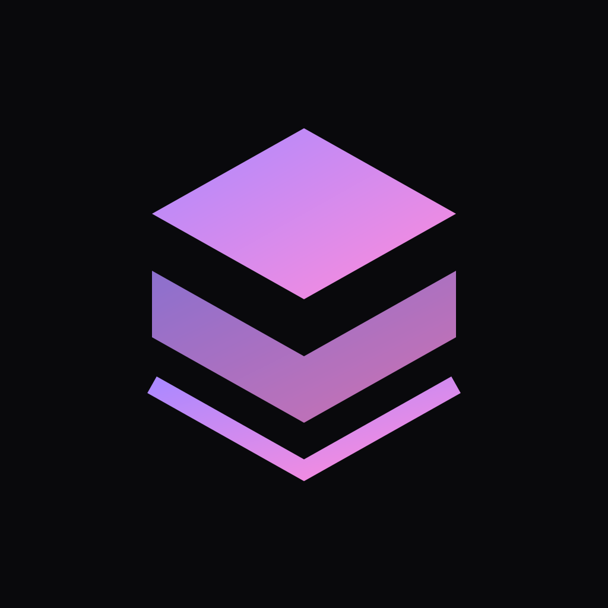

Try your product
Open Dev Day Pulse and create a brief as an attendee would.

launchlab.OKX DEV DAY · JUDGE PLAYGROUND
LaunchLab turns a finished project into a test people can try, then brings the evidence back to your agent.
Browser demo. No login, wallet or charges.
PLAY THE FOUNDER
START WITH THE QUESTION
You have built Dev Day Pulse, a small app that helps event attendees turn an idea into an agent-service experiment brief.
Before building more, you want to see whether people can use it without help.
Can first-time attendees create a useful experiment brief on their own?
YOU STAY IN CONTROL
This is an example plan for the browser rehearsal. In the paid service, LaunchLab prepares a plan for your project and asks before spending or deploying.
This opens the already-built sample. It does not buy a service or deploy a new site.
Open Dev Day Pulse and create a brief as an attendee would.
Count actions such as creating or copying a brief. Recording starts off.
Leave feedback even if you choose not to record activity.
See counts from this visit and save a small evidence summary.
NOW YOU'RE THE ATTENDEE
Pick a problem and audience, create a brief, then leave feedback.
The sample is loading. Your data stays in this browser.
If the embedded sample does not open, try it in its own tab ↗. Activity in that tab won't appear in this page's summary.
OBSERVATIONS, NOT GUESSES
Browser-local observations from this page visit. These are rehearsal results.
Waiting for the sample's observations.
The sample retains up to 400 recent actions. The counts here include only this page visit.
A browser session, not a verified person.
Each successful creation counts separately.
Updating a response doesn't create another.
| Activity | Actions |
|---|
This checks whether the sample works and whether actions get recorded correctly. It does not prove customer demand. Price preferences are opinions; copies and export requests aren't purchases.
In a hosted experiment, LaunchLab brings invited testers' activity and feedback together in the private task dashboard. This public rehearsal keeps observations in your browser.
READY TO TRY THE REAL SERVICE?
Open your coding agent with the official OKX AI connection and sign in. Paste this prompt to ask LaunchLab to prepare a test for the public sample.
Need the connection first? Use OKX's agent installation guide ↗. Installation and sign-in are separate from the browser demo.
Agent 13905 · Launch and Validation Pilot. The public profile may be unavailable; use official buyer discovery. A running task is not yet a ready preview. Your agent should explain access issues. Provider readiness or provider model-funding blocks need the LaunchLab operator; judges do not need to supply provider credentials or work around them.
Get the example repository ↗Works as a first message. No prior LaunchLab conversation needed.
Download the prompt ↓OPEN AND INSPECTABLE
The demo uses the public Dev Day Pulse project. Brief generation uses fixed templates; it does not call an LLM.
Use Node 22.12 or newer. No API key, wallet or environment file needed.
git clone https://github.com/JyTey2004/launchlab-devday-pulse.git
cd launchlab-devday-pulse
git checkout 76fa3ae06b8ea8a6a7fd1e58fa82723687296c72
npm ci --ignore-scripts
npm test
npm run devOpen 127.0.0.1:4417/?test=1. This runs the sample app, not the paid LaunchLab service. Installation needs internet access.